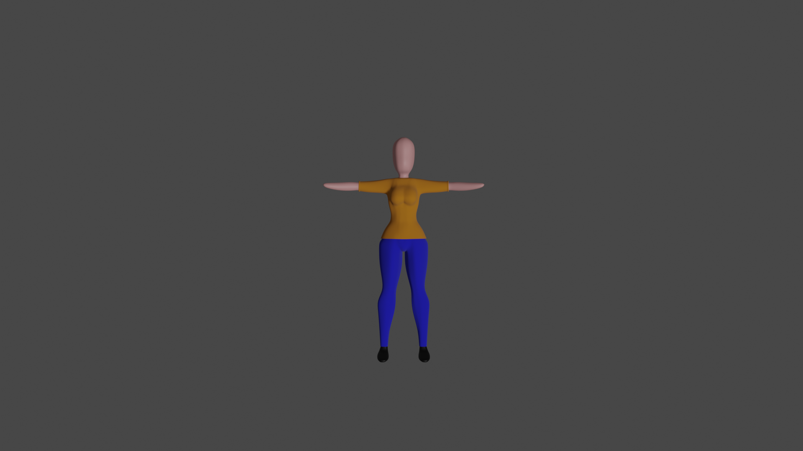

7. Arcos

Los seres vivos estamos construidos con articulaciones que funcionan como pivotes por ende no nos movemos en línea recta, por ello en el caso de la animación debemos crear arcos que simulan la naturalidad del movimiento ya que si no aplicamos este principio el resultado sería robótico y no orgánico.
10. Exageración
Este principio busca acentuar o exagerar una acción lo que tare como consecuencia que esta sea mas creíble, interviene en todos los demás principios. Un ejemplo de este podría ser el clásico personaje que ve algo que le sorprende o impresiona y sus ojos se vuelven mas grandes o se salen de sus cuencas, lo que exagera la acentúa la acción y también hace parte del principio de acción secundaria.
8. Acción secundaria
Esta acción se crea para enfatizar en la acción principal y es consecuencia de esta, pero debemos tener mucho cuidado ya que nunca debe estar muy marcada pues como consecuencia se podría perder el foco del espectador. Un claro ejemplo al animar a una chica de cabello largo corriendo este debe moverse hacia atrás si la vemos de frente, o en alguna dirección específica y además en la escena hay mucha intervención del viento.
11. Solidez
Este principio es más utilizado en animación 2D ya que busca dar volumen y peso a una animación por ejemplo no es lo mismo ver un cuadro con sus cuatro lados a verlo desde una perspectiva donde se observa completo.
9. Ritmo
Este principio hace referencia al ritmo y duración de la acción de un personaje el cual debe buscarse represente la naturalidad. Este principio logra por ejemplo que al crear un movimiento pero se le aplique una velocidad diferente exprese emociones distintas en el caso del lenguaje corporal si un personaje gira lentamente la cabeza puede expresar curiosidad o meditación, en cambio si la gira intempestivamente denota que algo le ha asustado.
12. Atractivo
Como animadores debemos conseguir darles vida propia a nuestros personajes, de allí la importancia de dar una belleza coherente y una personalidad a dicha animación. No solo es lograr el mejor dibujo con el personaje más bonito, si no dar una animación coherente entre su forma de ser, de moverse y el estado emocional en el que se encuentra.